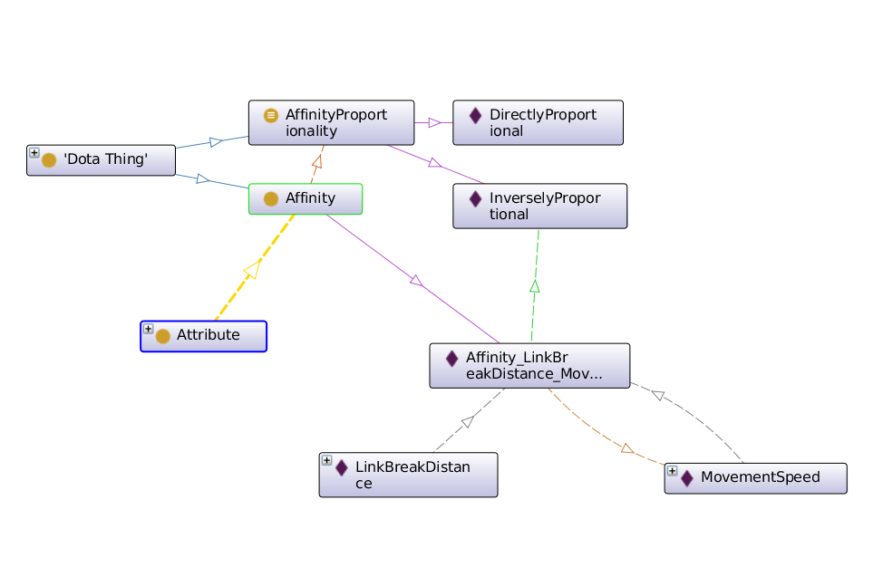
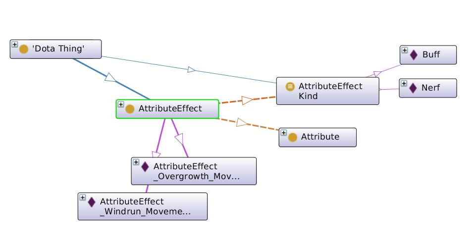
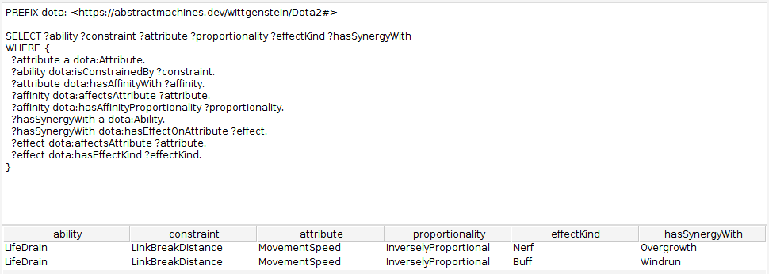

AM009
Building a Dota Ontology (Part 4): Affinities and Attribute Effects
Disclaimer
I am not a professional Dota player, just a fan of the game. The knowledge presented here about it is not official knowledge about the game, and is a mix of my perception of it after ~1200 hours playing it and crowdsourced Dota 2 wiki pages. Take it "as is".
Table of Contents
1. Recap from Part 3
In the last post we introduced the idea of affinity and modeled it to query what abilities had good synergy with what other abilities. The results were energizing, as we saw how LifeDrain was clearly linked to Overgrowth!
Our model however fell short in finding out that Windrun was, while linked to LifeDrain, not particularly beneficial with it. If anything its a good spell against LifeDrain!
Today we are going to lift this idea of an Affinity into an instance of a class of Affinities that can help us represent not only what two attributes are affine, but in what relation, and the idea of an AttributeEffect, where we will model how a particular Ability affects an attribute.
This should allow us to model the fact that MovingSpeed is inversely affine to LinkBreakDistance, so the slower someone moves the better it is for any LinkBreakDistance-constrained ability, and the fact that while Overgrowth nerfs the MovingSpeed of a target, Windrun buffs it.
These last two meaning to decrease and to increase, in the lingo, typically associated with a bad or a good effect on a game element. E.g, "Pugna got nerfed, his cast range is so small now" or "Treat is so buffed this patch, you can Overgrowth across the entire map".
Lets begin by modeling the Affinity.
2. Introducing Affinities
An Affinity will be a class of things.
### https://abstractmachines.dev/wittgenstein/Dota2#Affinity
:Affinity rdf:type owl:Class ;
rdfs:subClassOf :DotaThing .
And Attributes will relate to them via the hasAffinityWith relationship.
### https://abstractmachines.dev/wittgenstein/Dota2#hasAffinityWith
:hasAffinityWith rdf:type owl:ObjectProperty ;
rdfs:subPropertyOf :DotaObjectProperty ;
rdfs:domain :Attribute ;
rdfs:range :Affinity .
In this way, :LinkBreakDistance, the attribute, can be said to have affinity
with :MovementSpeed through an intermediary entity that represents the
affinity from one to the other.
### https://abstractmachines.dev/wittgenstein/Dota2#LinkBreakDistance
:LinkBreakDistance :hasAffinityWith :Affinity_LinkBreakDistance_MovementSpeed .
### https://abstractmachines.dev/wittgenstein/Dota2#Affinity_LinkBreakDistance_MovementSpeed
:Affinity_LinkBreakDistance_MovementSpeed rdf:type :Affinity ;
Great! Now we have an intermediary entity that we can use to say more things about the affinity of these 2 attributes. It is named, but it could as well have been anonymous.
There's 2 things we are interested in when it comes to affinities. The first one is whether the relationship between the attributes that creates the affinity is directly or inversely proportional: e.g, if the movement speed goes up, that is bad for any existing link break distance because the target will be able to run away faster and break the link.
So we'll introduce these 2 relationships: affectsAttribute and
hasAffinityProportionality (and the respective proportionalities that we
support).
### https://abstractmachines.dev/wittgenstein/Dota2#affectsAttribute
:affectsAttribute rdf:type owl:ObjectProperty ;
rdfs:subPropertyOf :DotaObjectProperty ;
rdfs:domain :AttributeEffect ;
rdfs:range :Attribute .
### https://abstractmachines.dev/wittgenstein/Dota2#hasAffinityProportionality
:hasAffinityProportionality rdf:type owl:ObjectProperty ;
rdfs:subPropertyOf :DotaObjectProperty ;
rdfs:domain :Affinity ;
rdfs:range :AffinityProportionality .
### https://abstractmachines.dev/wittgenstein/Dota2#AffinityProportionality
:AffinityProportionality rdf:type owl:Class ;
rdfs:subClassOf :DotaThing .
### https://abstractmachines.dev/wittgenstein/Dota2#DirectlyProportional
:DirectlyProportional rdf:type :AffinityProportionality .
### https://abstractmachines.dev/wittgenstein/Dota2#InverselyProportional
:InverselyProportional rdf:type :AffinityProportionality .
Now we can describe how the affinity between link break distance and movement speed is in more detail.
### https://abstractmachines.dev/wittgenstein/Dota2#Affinity_LinkBreakDistance_MovementSpeed
:Affinity_LinkBreakDistance_MovementSpeed
:affectsAttribute :MovementSpeed ;
:hasAffinityProportionality :InverselyProportional .

This should be a little clearer now. The important bit is that we need proportionality to understand whether an buff (improvement) or a nerf (decrease) of this particular attribute is beneficial or not for the other attribute. E.g, Spell Amplification benefits from Magic Resistance going down. The less magic resistance one has, the more the spell amplification will do its magic. This would be inversely proportional.
An example of directly proportional would be AttackDamage and LifeSteal (% of health restored based per attack). The more you damage on each attack, the better the life steal effects will be.
Lets trace our way to :MovementSpeed now:
- The ability
:LifeDrain:isConstrainedBy:LinkBreakDistance :LinkBreakDistance:hasAffinityWith:Affinity_LinkBreakDistance_MovementSpeed- which
:affectsAttribute:MovementSpeed
Kinda cool, right? The relations even form sentences for us. Ontologists would say that we're building a vocabulary with good reason. Alright, moving on.
3. How Abilities Affect Attributes
The next step here is to represent exactly how an ability affects an attribute. I unfortunately haven't found a stable structured representation of this that I can rely on to quickly sketch the entire ontology of attribute effects, but with a friend we are looking into it. In the meantime, we will model Treant Protector's Overgrowth by hand.
Overgrowth, being a global ability that roots everyone to the ground, has an
effect on the:MovementSpeed. It reduces it to zero, effectively speaking. In
reality, within the game itself the movement speed is not altered but units go
to this meta-state "rooted" where they cannot move. For the sake of our
existing ontology, we will assume it just reduces the movement speed and we
will consider Overgrowth to be nerf it.
### https://abstractmachines.dev/wittgenstein/Dota2#Overgrowth
:Overgrowth :hasEffectOnAttribute :AttributeEffect_Overgrowth_MovementSpeed .
There. We need to say a few things about this attribute effect, so we will model a class of things that represent effects on attributes and we will call it AttributeEffect.
AttributeEffects will have 2 relationships: what attribute it actually affects, and what kind of effect it has.
### https://abstractmachines.dev/wittgenstein/Dota2#AttributeEffect
:AttributeEffect rdf:type owl:Class ;
rdfs:subClassOf :DotaThing .
### https://abstractmachines.dev/wittgenstein/Dota2#affectsAttribute
:affectsAttribute rdf:type owl:ObjectProperty ;
rdfs:subPropertyOf :DotaObjectProperty ;
rdfs:domain :AttributeEffect ;
rdfs:range :Attribute .
### https://abstractmachines.dev/wittgenstein/Dota2#hasEffectKind
:hasEffectKind rdf:type owl:ObjectProperty ;
rdfs:subPropertyOf :DotaObjectProperty ;
rdfs:domain :AttributeEffect ;
rdfs:range :AttributeEffectKind .
### https://abstractmachines.dev/wittgenstein/Dota2#AttributeEffectKind
:AttributeEffectKind rdf:type owl:Class ;
rdfs:subClassOf :DotaThing .
### https://abstractmachines.dev/wittgenstein/Dota2#Nerf
:Nerf rdf:type :AttributeEffectKind .
### https://abstractmachines.dev/wittgenstein/Dota2#Buff
:Buff rdf:type :AttributeEffectKind .
And with this we can describe Ovegrowth's effect on:MovementSpeed:
:AttributeEffect_Overgrowth_MovementSpeed rdf:type :AttributeEffect ;
:affectsAttribute :MovementSpeed ;
:hasEffectKind :Nerf .

With both these things we have established the effects of an ability on a particular attribute, the constraints of an ability from a particular attribute, and how two arbitrary attributes may relate to each other.
Now we can verify if this modeling solves the problem of distinguishing between Windrun, which was modeled following the same process as Overgrowth, and Overgrowth.
Our SPARQL query this time will be a little more complex, so lets break it down.
PREFIX dota: <https://abstractmachines.dev/wittgenstein/Dota2#>
SELECT ?ability ?constraint ?attribute ?proportionality ?effectKind ?hasSynergyWith
WHERE {
...
}
The first bit is setting up a handy prefix, and laying out all of the "columns" we want in our results.
We're interested in seeing which ability (?ability) has what constraints (?constraint), that have affinity to to some ?attribute in some ?proportionality, and what other ability (?hasSynergyWith) has an effect on the exact same ?attribute, characterized by its ?effectKind.
?attribute a dota:Attribute.
?ability dota:isConstrainedBy ?constraint.
Then we'll match all attributes and all the abilities that are constrained by them. We need to constraint the attributes to the ones that have abilities that constrain them.
?attribute dota:hasAffinityWith ?affinity.
?affinity dota:affectsAttribute ?attribute.
?affinity dota:hasAffinityProportionality ?proportionality.
With those attributes in place, we can find all the affinities that affect them, and capture also their proportionality.
This means that for :MovementSpeed we will find all the affinities that
affect :MovementSpeed.
?hasSynergyWith a dota:Ability.
?hasSynergyWith dota:hasEffectOnAttribute ?effect.
?effect dota:affectsAttribute ?attribute.
?effect dota:hasEffectKind ?effectKind.
Finally we can find all the abilities (?hasSynergyWith) that have some effect, such that the effect affects any of the ?attributes we have found. We will also capture the kind of effect.

And voila! We can now list both Overgrowth and Windrun in relation to LifeDrain with enough information to tell which one is good and which one is bad against it.
To do that, we can just constraint our query more. Remember that we just captured the proportionality and the effect kind, whereas we can link them together by means of a table, of hardcoding them in the query, or by unifying the ideas of effectKind and affinityProportionality. They are after all quite similar.
If we hardcode the ?effectKind to be dota:Nerf, we will only get Overgrowth
as a result.
?effect dota:hasEffectKind dota:Nerf.
If we unify the proportionality and effect kind, we can be a little smarter and match on any effect that has the same kind of the proportionality the affinity has.
?effect dota:hasEffectKind ?proportionality.
And so on and so forth.
Here's the full query:
PREFIX dota: <https://abstractmachines.dev/wittgenstein/Dota2#>
SELECT ?ability ?constraint ?attribute ?proportionality ?effectKind ?hasSynergyWith
WHERE {
?attribute a dota:Attribute.
?ability dota:isConstrainedBy ?constraint.
?attribute dota:hasAffinityWith ?affinity.
?affinity dota:affectsAttribute ?attribute.
?affinity dota:hasAffinityProportionality ?proportionality.
?hasSynergyWith a dota:Ability.
?hasSynergyWith dota:hasEffectOnAttribute ?effect.
?effect dota:affectsAttribute ?attribute.
?effect dota:hasEffectKind ?effectKind.
}
4. Next Steps
So far we have done 3 different modelings from scratch until we've found one that helped us answer our query, and then we iterated one more time on one of them. I'd say that is 4 "modeling runs" we've done.
This has been fun! Even if the model doesn't have a lot of information at the moment, it is enough to answer my question. We'd call this Proof Of Concept.
The next steps are to answer this same question across a much larger set of abilities, affinities, and attribute effects. I expect some trouble here.
Trouble in the sense that I have not found good resources out there for these 3 pillars of knowledge our ontology needs to work.
Sources like Gamepedia's Dota2 Wiki, DotaBuff.com, DotaFire.com, or Liquipedia's Dota2 Wiki, have tons of semi-structured information about abilities and attributes, but the only information you can find on affinities is either highly unstructured, or just not present.
So in the next part we're going to do a little exploration on ontology population. We'll look at what data is available from what sources, and we'll try to automate turning it into triplets for us to query.
References
- Dota 2 Gamepedia [wiki]
- Dota 2 Ontology [github]
- OWL [overview]
- SPARQL [spec]
- Turtle [spec]